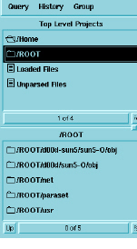
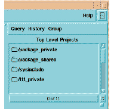

Working With the Minibrowser
To make a query using the Minibrowser, select one or more items in one of the Minibrowser list regions, then select a query from the Query menu. To recall a previously displayed list, select the list’s title from the History menu.

The Minibrowser comprises two scrolling list regions. The lists in these regions can contain the following items:
• projects, subprojects, files, and entities, as you see in browse mode in the Browser
• results of queries or selections made from the Minibrowser’s Query and History menus
• entities and/or instances that are members of groups, displayed as a result of selecting Browse > Minibrowser in the Group Manager
• instances, displayed as a result of selecting Browse > Instances in the Group Manager
The Minibrowser offers two different list configurations: instance lists and item lists. Only instances use instance lists; all other entities use item lists.

Item lists and instance lists both feature Filter List buttons, as described in Filtering Lists.
The Minibrowser’s two list regions operate interactively. One list region is always “current” and the other is “noncurrent.” The current list region is the one in which you have made the most recent selection by clicking or clicking and dragging.
DIScover always displays lists of projects, files, entities, and/or instances in the noncurrent list region. When you start the Viewer, both list regions are noncurrent; the upper list region receives the first list that you display.
Whenever you make a selection in one of the list regions, it becomes the current list region and subsequent displays appear in the other list region. This enables you to retain a view of the current list while you use the other list region to view items.
While using the Minibrowser, the Viewer is available for text and graphical displays of selected entities and instances. Double-click any entity in the Minibrowser, and the Emacs buffer in the Viewer displays a text view of the selected entity, with the cursor highlighting the exact location of the entity. Similarly, select any instance in the Minibrowser, and the Emacs buffer focuses on the selected instance.